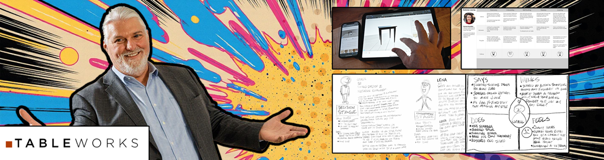

Tableworks: Turning Custom Furniture Design into an On-Demand, Browser-Based Experience
Vision, leadership, and innovation across digital-to-physical workflows
Project Overview
- Client: Tableworks (Founder-led startup)
- Role: Founder / Product Designer
- Timeline: 2017-10 – 2019-11
- Scope: Browser-based 3D configurator; design-to-manufacturing pipeline; MVP blueprint
- Outcome: Validated concept, documented MVP, and scalable foundations for expansion
Tools & Methods
- Lean Startup Canvas
- Traction roadmap
- Problem / opportunity statements
- User interviews (friends/family, Craigslist, intercepts)
- Field studies
- Market research
- SWOT
- Empathy mapping
- Journey mapping & workshops
- JTBD
- How Might We
- Five Whys
- Storyboards
- Gamification explorations
- Axure (lo‑fi → hi‑fi) with 3D integration
- Guerrilla & remote usability testing
- Contextual testing
- Figma
- Adobe CC
- After Effects
- Miro
- Lucidchart
- Sketchfab API
- Unity
- three.js
- CAD
- Maya
- Jira
- Confluence
- Zoom
- Teams
Starting Point
The furniture market offered limited meaningful customization for everyday shoppers. People wanted to tailor dimensions, materials, and finishes but lacked simple tools to do so. Tableworks set out to merge real‑time, browser‑based design with manufacturable outputs, enabling custom furniture built to spec and delivered within weeks.
- Customers lacked simple, trustworthy tools for meaningful customization.
- Bridging 3D configuration to production required manufacturable exports without manual rework.
- Resource constraints (single engineer, pre‑seed budget) demanded ruthless MVP focus.
- Non‑technical users needed intuitive 3D controls and clear trust signals for unseen custom products.
- Market shift from passive browsing to active design required clear pricing, returns, and quality assurances.
Vision & Objectives
Empower everyday users—not just designers—to customize furniture in the browser, visualize it instantly in 3D, and send production‑ready outputs directly to fabrication with minimal friction.
- Real‑time customization of dimensions, materials, and finishes.
- Seamless digital ↔ physical pipeline from configuration to manufacturable CAD/CAM.
- Validate desirability and feasibility; define a repeatable MVP blueprint for scale.
Leadership Moves
- Frame & align: Established Lean Canvas, traction roadmap, and success criteria to focus the MVP and partner efforts.
- Research & synthesis: Conducted 30+ interviews and field studies; synthesized insights via empathy maps, journeys, and SWOT.
- Bridge digital to physical: Defined export standards and checks to ensure configurator outputs were manufacturable without manual translation.
- Operate lean: Balanced ambition with constraints; kept scope tight to deliver a validated, scalable foundation.
Innovation in Action
- Discover & Synthesize: Interviewed 30+ target users; mapped behaviors, motivations, and friction in 3D onboarding and purchase confidence.
- Ideate & Prototype: Storyboards and low‑fi wires evolved to hi‑fi Axure prototypes with embedded 3D via Sketchfab.
- Test & Iterate: Guerrilla, remote, and contextual testing refined 3D controls, onboarding, and pricing transparency.
- Validate Manufacturability: Exported designs to CAD for CNC and 3D‑printing to confirm feasibility and reduce downstream rework.
- Plan for Scale: Created a reusable UI library and Lean/Design‑Thinking playbook to accelerate future features and partners.
Key Solutions
- Custom 3D Configurator: Browser interface to adjust dimensions, choose materials/finishes, and preview instant 3D updates.
- Design‑to‑Manufacturing Pipeline: Automated CAD/CAM exports with cut‑lists and fabrication instructions for CNC and 3D‑printing—no manual translation.
- Interactive Prototype Suite: Lo‑fi Figma plus hi‑fi Axure prototypes with full 3D integration to validate flows before build.
- Onboarding & Trust Builders: Starter templates, contextual tooltips, transparent pricing, and delivery timelines to reduce first‑time friction.
Impact & Results
- Concept validation: 30+ target users interviewed/tested; three personas identified; strong appetite for on‑demand customization.
- Prototype efficiency: Hi‑fi Axure + 3D cut onboarding time ~50% and clarified dimension/material controls.
- MVP blueprint: Lean Canvas, roadmap, requirements, brand narrative, and a Figma‑based design system.
- Automated pipeline: End‑to‑end CAD/CAM export enabled direct handoff to CNC and 3D‑printing.
- Scalable foundations: Reusable UI library and Lean/Design‑Thinking playbook to accelerate future work.
Lessons Learned
- Iterate early with manufacturability checks to surface constraints before expensive builds.
- Cross‑discipline collaboration (UX, 3D, woodworking, additive manufacturing) creates feasible solutions.
- Education and transparent pricing/tooltips are key to trust and adoption.
- Stay lean; pair MVP focus with a reusable design system to scale efficiently.
Forward Look
- Scale manufacturing partners (CNC & 3D‑printing) and expand material options.
- Add AR previews, a mobile configurator, and light gamification to increase engagement.
- Pursue seed fundraising using POC traction and pilot interest to build a production‑ready platform.
- Instrument analytics for onboarding, design‑to‑order conversion, and time‑to‑first‑design.
- Hire engineering, PM, and a manufacturing liaison; formalize agile CI/CD pipelines.
- Go‑to‑market via design communities, influencer partners, and staged beta invites.